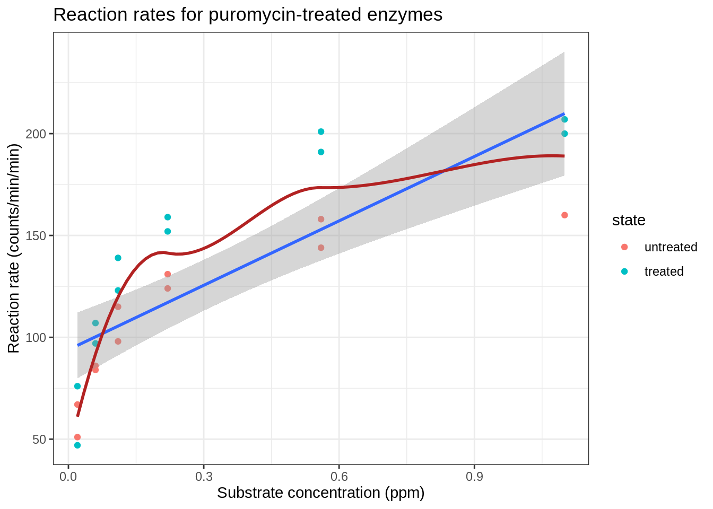
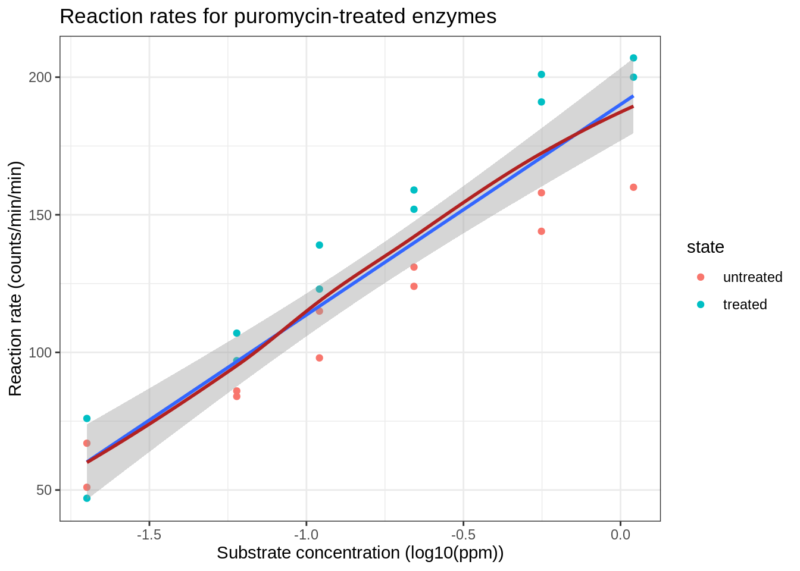
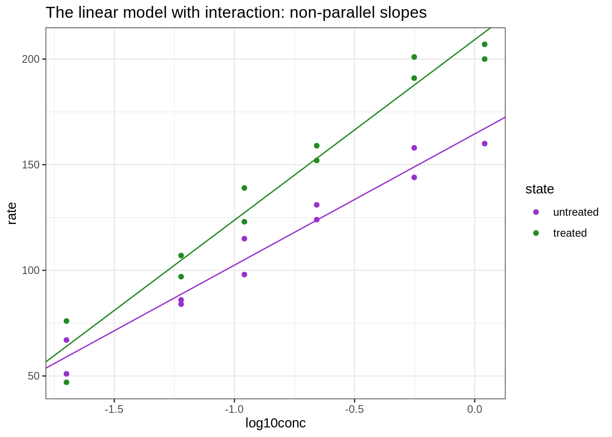

8.3. Multiple regression with interaction: puromycin example - solution
Lieven Clement, Jeroen Gilis and Milan Malfait
statOmics, Ghent University (https://statomics.github.io)

library(tidyverse)
theme_set(theme_bw())1 Puromycin data
Data on the velocity of an enzymatic reaction were obtained by Treloar (1974). The number of counts per minute of radioactive product from the reaction was measured as a function of substrate concentration in parts per million (ppm) and from these counts the initial rate (or velocity) of the reaction was calculated (counts/min/min). The experiment was conducted once with the enzyme treated with Puromycin, and once with the enzyme untreated.
Assess if there is an association between the substrate concentration and rate for both the treated and untreated enzymes.
2 Import data
data(Puromycin)3 Data wrangling
For a clearer interpretation of the model parameters later on, we will make the untreated state enzymes the reference category.
Puromycin <- Puromycin %>%
mutate(state = fct_relevel(state, c("untreated", "treated")))3.1 Data Exploration
First, we visualize the association between the concentration and the enzyme rate, for both of the enzyme states.
Puromycin %>%
ggplot(aes(conc, rate)) +
geom_point(aes(col = state)) +
stat_smooth(method = "lm") +
stat_smooth(color = "firebrick", se = FALSE) +
labs(
x = "Substrate concentration (ppm)",
y = "Reaction rate (counts/min/min)"
) +
ggtitle("Reaction rates for puromycin-treated enzymes")## `geom_smooth()` using formula 'y ~ x'## `geom_smooth()` using method = 'loess' and formula 'y ~ x'
The plot shows that there is a relation between the velocity and the concentration, however, the relation does not seem to be linear.
We will assess the impact of log-transforming the concentration. Because the concentration is measured in ppm we will log\(_{10}\) transform the data.
Puromycin %>%
ggplot(aes(x = log10(conc), y = rate)) +
geom_point(aes(col = state)) +
stat_smooth(method = "lm") +
stat_smooth(color = "firebrick", se = FALSE) +
labs(
x = "Substrate concentration (log10(ppm))",
y = "Reaction rate (counts/min/min)"
) +
ggtitle("Reaction rates for puromycin-treated enzymes")## `geom_smooth()` using formula 'y ~ x'## `geom_smooth()` using method = 'loess' and formula 'y ~ x'
The relation between the velocity and the log\(_{10}\) transformed concentration seems to be linear.
4 Linear regression
We will fit the following model to the data
\(Y_i = \beta_0 + \beta_c x_c+ \beta_s x_s +\beta_{c:s}x_{c}x_{s} + \epsilon_i\)
with
\(Y_i\) the reaction rate,
\(\beta_0\) the intercept,
\(\beta_{c}\) the main effect for log10 concentration,
\(x_c\) the log10 concentration,
\(\beta_{p}\) the main effect for treatment ,
\(x_s\) a dummy variable for “state” that is 0 if the enzymes that are untreated and 1 if the enzymes are treated with Puromycin,
\(\beta_{c:s}\) the interaction effect between concentration and treatment state,
\(\epsilon_i\) i.i.d. normally distributed with mean 0 and variance \(\sigma^2\).
Note, that we write the substrate concentration with a small letter because the predictor is not random. The researchers have chosen the substrate concentrations in the design phase and it is thus no random variable.
The model implies two different regression lines
- no treatment (\(x_s = 0\)) \[ Y_i = \beta_0 + \beta_c x_c + \epsilon \]
- treatment (x_s = 1)
\[ Y_i = (\beta_0 + \beta_s) + (\beta_c+\beta_{c:s}) x_c + \epsilon \]
So the main effect for treatment has the interpretation as the change in intercept between treated and untreated samples.
The interaction term has the interpretation as the change in slope between treated and untreated samples.
Puromycin <- Puromycin %>%
mutate(log10conc = log10(conc))
mod1 <- lm(rate ~ log10conc * state, Puromycin)
summary(mod1)##
## Call:
## lm(formula = rate ~ log10conc * state, data = Puromycin)
##
## Residuals:
## Min 1Q Median 3Q Max
## -17.018 -6.381 -1.005 7.616 13.323
##
## Coefficients:
## Estimate Std. Error t value Pr(>|t|)
## (Intercept) 164.588 5.153 31.938 < 2e-16 ***
## log10conc 62.129 5.020 12.375 1.54e-10 ***
## statetreated 44.606 6.811 6.549 2.85e-06 ***
## log10conc:statetreated 23.321 6.763 3.448 0.00269 **
## ---
## Signif. codes: 0 '***' 0.001 '**' 0.01 '*' 0.05 '.' 0.1 ' ' 1
##
## Residual standard error: 9.151 on 19 degrees of freedom
## Multiple R-squared: 0.968, Adjusted R-squared: 0.9629
## F-statistic: 191.3 on 3 and 19 DF, p-value: 2.267e-14Before we perform inference we will first assess the assumptions
4.1 Assumptions
- Independence
- Linearity
- Normal distribution of the residuals
- Homoscedasticity
We assume that the experiment was well designed and that the different reactions that were use in the experiment are independent.
4.1.1 Linearity
We assess linearity in a residual analysis
plot(mod1, which = 1)
The assumption of linearity is met.
4.1.2 Normality
plot(mod1, which = 2)
The QQ-plot does not show large deviations from normality.
4.1.3 Homoscedasticity: equality of the variance
We can again use the residual plot for assessing this assumption or the plot were we plot the square root of the standardized residuals in function of the fit.
plot(mod1, which = 3)
We see that the spread of the majority of the residuals is more or less similar. As such, we may assume homoscedasticity of the data.
4.2 Intermezzo: Graphical interpretation of the parameters
Simple linear model: 1 slope
This is the same model that we fit in the Chapter 6 exercise:
\[ Y_i = \beta_0 + \beta_{\text{rate}} X_{i, \text{rate}} + \epsilon_i \]
mod_simple <- lm(rate ~ log10conc, data = Puromycin)
mod_simple##
## Call:
## lm(formula = rate ~ log10conc, data = Puromycin)
##
## Coefficients:
## (Intercept) log10conc
## 190.09 76.45ggplot(Puromycin, aes(log10conc, rate)) +
geom_point(aes(color = state)) +
geom_abline(
intercept = coef(mod_simple)[1],
slope = coef(mod_simple)[2]
) +
scale_color_manual(values = c("darkorchid", "forestgreen")) +
ggtitle("The simple linear model")Additive model: 2 parallel slopes
We add an additional term for the state of the reactin (treated or untreated). Note that this variable is categorical.
\[ Y_i = \beta_0 + \beta_{\text{rate}} X_{i, \text{rate}} + \beta_{\text{state}} X_{i, \text{state}} + \epsilon_i \]
mod_add <- lm(rate ~ log10conc + state, data = Puromycin)
mod_add##
## Call:
## lm(formula = rate ~ log10conc + state, data = Puromycin)
##
## Coefficients:
## (Intercept) log10conc statetreated
## 175.73 74.98 25.18ggplot(Puromycin, aes(log10conc, rate, col = state)) +
geom_point() +
## Line for the untreated group
geom_abline(
intercept = coef(mod_add)[1],
slope = coef(mod_add)[2],
col = "darkorchid"
) +
## Line for the treated group
geom_abline(
intercept = coef(mod_add)[1] + coef(mod_add)[3],
slope = coef(mod_add)[2],
col = "forestgreen"
) +
scale_color_manual(values = c("darkorchid", "forestgreen")) +
ggtitle("The additive linear model with parallel slopes")The interaction model: 2 non-parallel slopes
\[ Y_i = \beta_0 + \beta_{\text{rate}} X_{i, \text{rate}} + \beta_{\text{state}} X_{i, \text{state}} + \beta_{\text{rate:state}} X_{i, \text{rate}} X_{i, \text{state}} + \epsilon_i \]
mod_int <- lm(rate ~ log10conc * state, data = Puromycin)
mod_int##
## Call:
## lm(formula = rate ~ log10conc * state, data = Puromycin)
##
## Coefficients:
## (Intercept) log10conc
## 164.59 62.13
## statetreated log10conc:statetreated
## 44.61 23.32ggplot(Puromycin, aes(log10conc, rate, col = state)) +
geom_point() +
## Line for the untreated group
geom_abline(
intercept = coef(mod_int)[1],
slope = coef(mod_int)[2],
col = "darkorchid"
) +
## Line for the treated group
geom_abline(
intercept = coef(mod_int)[1] + coef(mod_int)[3],
slope = coef(mod_int)[2] + coef(mod_int)[4],
col = "forestgreen"
) +
scale_color_manual(values = c("darkorchid", "forestgreen")) +
ggtitle("The linear model with interaction: non-parallel slopes")
4.3 Inference
We first do an omnibus test to assess is there is an effect of the log10 concentration on the velocity.
mod0 <- lm(rate ~ state, data = Puromycin)
anova(mod0, mod1)Next, we assess the interaction.
anova(mod1)We cannot remove the interaction of the model.
Hence, we cannot study the effect of the concentration without accounting for the treatment and have to assess following research questions.
- the association between velocity and the concentration is significant in the untreated group
\[ H_0: \beta_c = 0 \text{ vs } H_1: \beta_c \neq 0 \]
- the association between velocity and the concentration is significant in the treated group
$$
H_0: c + {c:s}= 0 H_1: c + {c:s} $$
- the association between velocity and the concentration is different between treated and untreated group
\[ H_0: \beta_{c:s}= 0\text{ vs }H_1: \beta_{c:s}\neq 0 \]
We can assess all these hypotheses using multcomp while correcting for multiple testing.
library(multcomp)## Loading required package: mvtnorm## Loading required package: survival## Loading required package: TH.data## Loading required package: MASS##
## Attaching package: 'MASS'## The following object is masked from 'package:dplyr':
##
## select##
## Attaching package: 'TH.data'## The following object is masked from 'package:MASS':
##
## geysermcp1 <- glht(mod1,
linfct = c(
"log10conc = 0",
"log10conc + log10conc:statetreated = 0",
"log10conc:statetreated = 0"
)
)
summary(mcp1)##
## Simultaneous Tests for General Linear Hypotheses
##
## Fit: lm(formula = rate ~ log10conc * state, data = Puromycin)
##
## Linear Hypotheses:
## Estimate Std. Error t value
## log10conc == 0 62.129 5.020 12.375
## log10conc + log10conc:statetreated == 0 85.450 4.531 18.858
## log10conc:statetreated == 0 23.321 6.763 3.448
## Pr(>|t|)
## log10conc == 0 < 0.001 ***
## log10conc + log10conc:statetreated == 0 < 0.001 ***
## log10conc:statetreated == 0 0.00681 **
## ---
## Signif. codes: 0 '***' 0.001 '**' 0.01 '*' 0.05 '.' 0.1 ' ' 1
## (Adjusted p values reported -- single-step method)confint(mcp1)##
## Simultaneous Confidence Intervals
##
## Fit: lm(formula = rate ~ log10conc * state, data = Puromycin)
##
## Quantile = 2.5116
## 95% family-wise confidence level
##
##
## Linear Hypotheses:
## Estimate lwr upr
## log10conc == 0 62.1285 49.5192 74.7379
## log10conc + log10conc:statetreated == 0 85.4499 74.0694 96.8305
## log10conc:statetreated == 0 23.3214 6.3358 40.30714.4 Conclusion
There is an extremely significant effect of the substrate concentration on the reaction rate (p<<0.001). The effect of the substrate concentration on the reaction rate is extremely significant for reactions catalysed with untreated enzymes. A reaction at a substrate concentration that is 10 times higher will have a reaction speed that is on average 62.1 counts/min higher (95% CI [49.5, 74.7] counts/min) (p << 0.001). The effect of the substrate concentration on the reaction rate is extremely significant for reactions catalysed puromycin treated enzymes (p << 0.001). A reaction at a substrate concentration that is 10 times higher will have a reaction speed that is on average 85.4 counts/min higher (95% CI [74.1, 96.8] counts/min). The effect of the substrate concentration on the reaction rate is very significantly higher for reactions catalysed with Puromycin treated enzymes than when catalysed with non-treated enzymes (p = 0.007). A reaction at a substrate concentration that is 10 times higher will have a reaction speed that is on average 23.3 counts/min higher for reactions that are catalysed with Puromycin treated enzymes than with untreated enzymes (95% CI [6.3, 40.3] counts/min).